The feel
Each world is pared back, whether you see the whole of it in one image or only a small part of a much larger one. Ken Wong, Monument Valley's designer and lead artist, planned from the start for every screen to be one you could frame and hang on a wall.1 He describes its spare look as the creation of "little worlds", and finds something really comforting "about feeling like you can see the whole world in one image".2 In the Alto games the environments are the main character, and the player should feel like a tiny part of a much larger world.3
It works by leaving things out. Harry Nesbitt, lead artist and programmer of Alto's Odyssey, asks "how far can you simplify a form until you're left only with its essence", so that "the player's mind can do all the hard work of filling in the blanks".3 Superhot's team kept their minimal look so the player's mind would do half the work, which they say is much harder to achieve with photorealistic visuals.4 It also suits a small team: Superhot's developers knew from the start that they could not churn out AAA-quality assets.5
- faceted
- calm
- pared-back
- readable
- framed
- dawn-to-dusk
Where it comes from
Éric Chahi set out to make Another World (1991) a fully polygonal game.6 Star Fox (1993) needed a special chip, the Super FX, because the Super NES was not polygon hardware.7 The look as it is now grew from small teams in the 2010s. Superhot started at the 7DFPS jam in August 2013 with a minimal look, the only thing a team with no graphic artists could deliver in time,4 and six people made Monument Valley (2014) inside ustwo's London design agency.8 Alto's Adventure (2015) was Harry Nesbitt's first game, and he was its sole artist and developer.9 Wallpaper* says Monument Valley's clean, minimalist style has proved very influential, especially among indie games.8
Core elements
One flat colour per face
Triangles are flat by definition, and flat shading lets them look it: each triangle is lit with its own surface normal, which gives the mesh a faceted look.10 Kill Screen saw Superhot's flat-shaded bullets "shine like jet black diamonds".4
Simplified forms
Every shape is simplified until only what it needs is left. Felix af Ekenstam set out to condense Polytopia's graphics down to their essence, the same way he treated its design.11 On Monument Valley, Wong says, the team "removed a lot of tools from the artist's toolbox", which made artists and developers think carefully about whether each polygon was needed.2
Stylised lighting
Light is designed, not simulated. The 3D artist Stanley Barrett often uses fake lighting that wouldn't make sense in the real world, to add colour and pick out parts of a scene.12 Monument Valley's shaders applied colour directly instead of creating a true lighting system,1 and the team wrote all of its own shaders around a custom directional lighting model rather than Unity's standard surface shaders.13
Colour coding
Colour tells the player what things are. In Superhot the enemies are red, the background is white and black marks everything usable, so "you understand it from the get-go".5 Mini Metro pairs its colours with shapes on a neutrally coloured background, which players with different types of colour blindness say works for them.14
Composed fixed views
In Monument Valley the view stays fixed, so its levels look almost like works of graphic art or illustrations.1 Danny Gray of ustwo games remembers Wong always talking about flower arranging, and how you frame the silhouette of a level on the screen.8
Time-of-day lighting
Before Alto, Harry Nesbitt learned Unity by building experiments.9 From the outset he wanted them to play heavily on light and how it changes through the day: one light, moving with a rotating sky, set the colour and shading of every object, with colours for dawn, day, dusk and night that could be adjusted to suit the scene.15 Alto's Adventure then shipped with a fully dynamic time-of-day lighting and weather system.9
How to do it
Budget the vertices first
Count before you model: for Star Fox, Nintendo worked out beforehand how many vertices one screen could show, and gave its starfighters the fewest polygons that still made clear which way their noses pointed.7 Then start from a blockout and refine it slowly. Barrett finds that step more seamless in low poly, and welds vertices to close wasted triangles.12
Give every face its own normal
Flat shading keeps each face's normal constant, so the whole face renders uniformly along it.16 When you build a mesh in code, put its vertices in no smoothing group before adding them, then generate the normals, and each face gets a flat one.17 Faces that share a vertex share its normal, so a flat-shaded mesh needs its own vertices for each triangle, or a shader that works the normal out: take the screen-space derivatives (ddx and ddy) of the world position and use their normalised cross product. If flat shading is all you need, this is the cheapest way, and you can strip the normals from the mesh.10
Colour by material groups
Barrett first splits faces into material groups with a set of colours, so he can keep changing them while he works on the lighting, then moves on to simple colours and gradient textures, which need very little texture space.12 Pack the textures into atlases, as Monument Valley did.1
Use one directional light
Nesbitt lit his day-and-night demo with a single directional light, a modified toon shader with a custom ramp, and a script that adjusts colours by time of day; its clock ran at 2 in-game minutes per second.15 Monument Valley added baked lightmaps for static ambient occlusion, and heavy overdraw for vignettes and faked volumetric glows.13 Barrett fakes god-rays with transparent gradients on flat planes.12
Add sky colours and depth fog
Give the sky its own ground, sun, sky and horizon colours.18 Add depth fog, which fades distant objects into one colour, and tint the fog with the sky colour: at full strength the sky colour replaces the fog colour completely, so there is no visible break between sky and fog.18
Choose the camera
For a view that never changes, use an orthographic camera, where objects stay the same size on screen however far away they are. Set its size as the width or height of the view, in metres.19 Monument Valley once let players zoom and rotate the camera, as in Fez, before Wong cut that and fixed the view in isometric,2 and its impossible paths only join up from that single orthographic angle.13 For a side view with depth, use a perspective camera, which scales objects by their distance.19 When a 2D engine struggled to give Alto's Adventure enough depth, Nesbitt moved to a 3D engine, and had foreground and background parallax, trivial in 3D, and camera zooming working within a couple of days.9
Give each colour one meaning
Decide what each colour means, and give each meaning a shape as well, so it still reads for colour-blind players. Dinosaur Polo Club designed both its games with a colour-blind mode from the beginning; Mini Motorways found it harder, because its terrain needs a more detailed background and its shapes can't be as simple.14 For flat 2D maps, study Harry Beck's 1933 Underground diagram, built on 45 degree angles with diamonds at interchanges.20
Cheat sheet
- Polygons
- 300 to 1,500 per character mesh on mobile, about 1,500 to 4,000 on desktop21
- Shading
- One normal per face, from unshared vertices or the cross product of ddx and ddy10
- Palette
- 16 colours in Another World6
- Textures
- None, or simple colours and small gradient textures12
- Lighting
- One directional light, colours set for dawn, day, dusk and night15
- Sky and fog
- Sky and horizon colours; depth fog tinted fully to the sky colour18
- Camera
- Orthographic for one fixed view, perspective for parallax19
Do
- Cut hard. Monument Valley's team expected to discard 70, 80 or 90 percent of their work.2
- Look at all your screens side by side. Monument Valley's team printed every one and pasted them on a wall as a colour script.1
- Use contrast in detail. Low poly makes it easy to keep some areas plain, so the eye goes where the detail is.12
- Let scale pick out what matters. Mini Motorways took its cue from novelty tourist maps, whose scale highlights the important roads and buildings.14
Avoid
- A cluttered, realistic look. Felix af Ekenstam finds it takes a lot of energy to look at.11
- Decoration for its own sake. Nothing in Monument Valley was put in simply to look pretty.2
- Perfect, identical shapes. Low-poly objects look blocky until you vary their rotation, scale and silhouette.12
- Shared vertices on a flat-shaded mesh. Triangles that share a vertex share its normal, so flat shading needs separate vertices or a shader that derives each face's normal.10
- Smooth shading on a low-poly mesh. It interpolates the normals to give the illusion of a smooth surface, so the faceted look is lost.16
Tools and tutorials
- Flat and Wireframe Shading
Jasper Flick's Unity tutorial: flat normals from screen-space derivatives, then a wireframe from barycentric coordinates.10
- Godot: Environment and post-processing
Procedural skies, depth and height fog, and Aerial Perspective to blend the fog into the sky.18
- Godot: SurfaceTool
Build meshes in code. Smooth group -1 gives flat normals.17
- Blender Manual: Shading
Shade Flat, Shade Smooth and Shade Auto Smooth, and what each does to the normals.16
Palette
Lagoon and coral come from Monument Valley's sea and rock, the sun and dune shadow from Alto's Odyssey, the red from Superhot's enemies, indigo and pink from Monument Valley 2's sky, and cream from Mini Metro's map.
Feel the vibe
In motion
Listen
Sparse and patient, with room around every note, like the empty space around a monument.
YouTubeA gentle, rolling theme to keep on while you layer silhouettes from near to far.
YouTubeWarm and wide, for sunset gradients and dunes that fade into haze.
YouTubeSmall, clean notes that tick along like trains on a map: flat shapes turned into sound.
YouTubeFrom outside games: hazy, sunlit electronica that suits a two-colour sky and a lot of empty space.
YouTube
More references
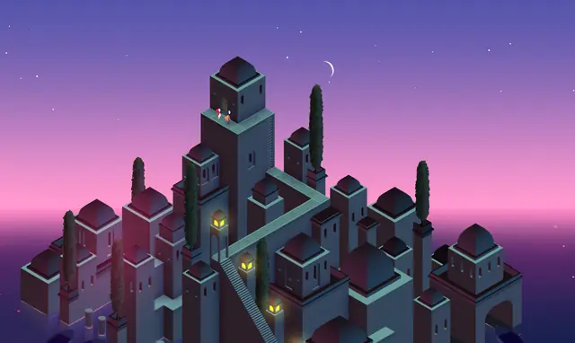
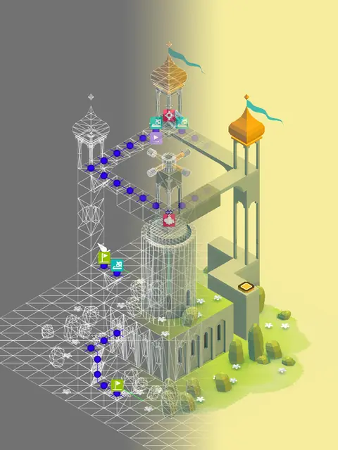
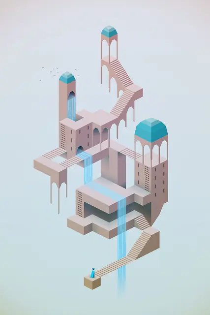
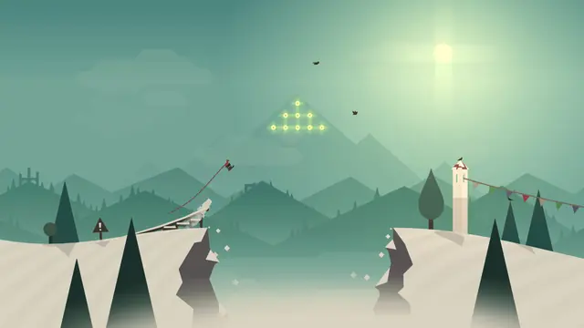
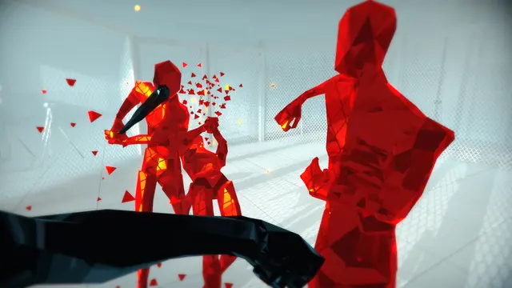
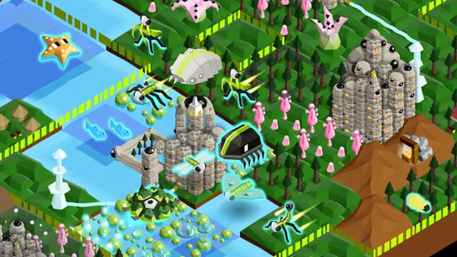
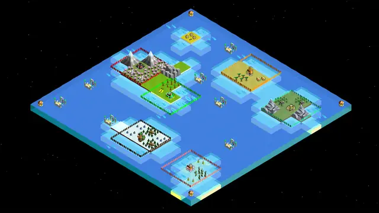

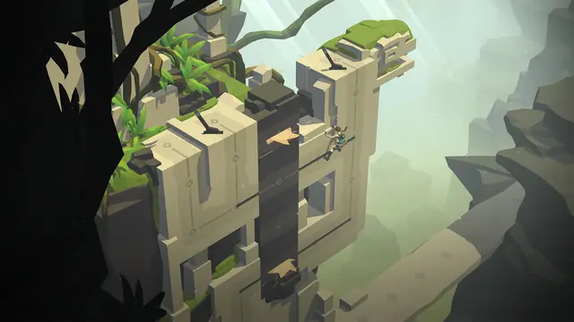
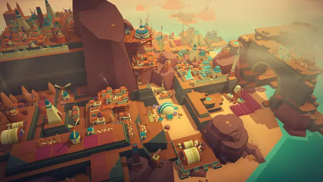
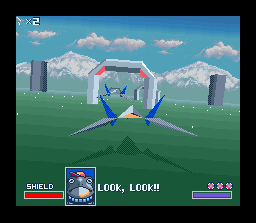
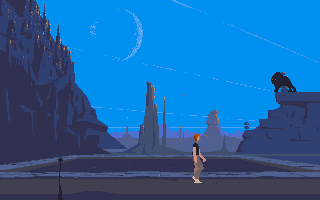
Games
- Another World
Study where polygons stop paying off: Chahi first built its backgrounds from tiny polygons, then turned to bitmaps when that took hours.6
- Star Fox
Study how its buildings are mostly squares and triangles, and its enemies flat shapes with as few polygons as possible.7
- Kentucky Route Zero
Study how each scene is staged: Tamas Kemenczy says the team came to see its environments as little theatre stages or set pieces, not scenery for characters to run through.22
- Monument Valley
Study how little each level holds, and why each piece is there.2
- Alto's Adventure
Study how a bold, minimalist style still gives the feeling of being high up in the mountains.9
- Mini Metro
Study how it grew for three and a half years without overloading its minimalism.14
- Superhot
Study how its colour code reads at a glance.5
- The Battle of Polytopia
Study how its visuals stay simple enough to work on a small screen.11
- Alto's Odyssey
Nesbitt describes a much brighter, more confident use of colour than in the first game.3
- Mini Motorways
Study its tile-based roads, which the team chose as the balance between precision and ease of use.14
Film, art and more
- Ascending and Descending
The Escher print that gave Ken Wong the idea of guiding a character from the bottom of a building to the top.1
- Harry Beck's Underground map
The first edition of Beck's diagrammatic Underground map.20 Dinosaur Polo Club's co-founders, Peter and Robert, took their inspiration for Mini Metro from London's underground.14
- Edward Hopper
Superhot's art director, Marcin Surma, names Hopper as one of the less obvious influences on its look.5
- Brian Eno
Monument Valley's soundtrack became a bed of ambience inspired largely by Eno.1
Sources
- 1The making of Monument Valley
- 2Ustwo: Monument Valley's elegance is the result of "letting go"
- 3Road to the IGF: Team Alto's Alto's Odyssey
- 4How SUPERHOT became that Matrix videogame we always wanted
- 5SUPER. HOT. Losing our virtual minds in SUPERHOT VR
- 6GDC 2011: Eric Chahi's Retro Postmortem: Another World
- 7Nintendo Classic Mini: SNES developer interview – Volume 1: Star Fox + Star Fox 2
- 8Monument Valley at 10: the story of the most meticulous puzzle game ever created
- 9The Making of Alto's Adventure
- 10Flat and Wireframe Shading
- 11Seven Years War: How The Battle of Polytopia conquered the mobile strategy world
- 12Creating Visual Interest in Low Poly Artworks
- 13Unity Focus: Monument Valley
- 14Mini Motorways and the delicate art of marrying complexity and minimalism
- 15Experimenting with Unity
- 16Blender Manual: Shading (Shade Smooth, Shade Auto Smooth, Shade Flat)
- 17SurfaceTool
- 18Environment and post-processing
- 19Camera3D
- 20Pocket Underground map, by H C Beck, January 1933
- 21Modeling characters for optimal performance
- 22A story told in five acts: The making of Kentucky Route Zero